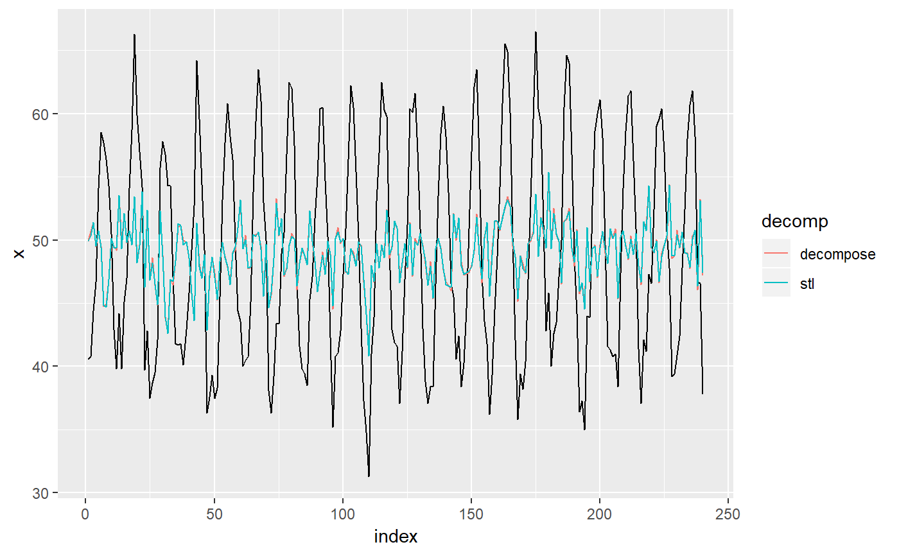

R/stats-decompose-tidiers.R
decompose_tidiers.RdThese tidiers provide an augment method for the results of a seasonal
decomposition with stats::decompose() or
stats::stl().
# S3 method for decomposed.ts augment(x, ...) # S3 method for stl augment(x, weights = TRUE, ...)
| x | An object of class |
|---|---|
| ... | Extra arguments. Unused. |
| weights | Whether to include the robust weights in the output. |
The augment method returns a tidy data frame with the following
columns:
.seasonalThe seasonal component of the decomposition.
.trendThe trend component of the decomposition.
.remainderThe remainder, or "random" component of the decomposition.
.weightThe final robust weights (stl only).
.seasadjThe seasonally adjusted (or "deseasonalised") series.
The augment method returns the computed seasonal and trend components,
as well as the "remainder" term and the seasonally adjusted (or
"deseasonalised") series.
# Time series of temperatures in Nottingham, 1920-1939: nottem#> Jan Feb Mar Apr May Jun Jul Aug Sep Oct Nov Dec #> 1920 40.6 40.8 44.4 46.7 54.1 58.5 57.7 56.4 54.3 50.5 42.9 39.8 #> 1921 44.2 39.8 45.1 47.0 54.1 58.7 66.3 59.9 57.0 54.2 39.7 42.8 #> 1922 37.5 38.7 39.5 42.1 55.7 57.8 56.8 54.3 54.3 47.1 41.8 41.7 #> 1923 41.8 40.1 42.9 45.8 49.2 52.7 64.2 59.6 54.4 49.2 36.3 37.6 #> 1924 39.3 37.5 38.3 45.5 53.2 57.7 60.8 58.2 56.4 49.8 44.4 43.6 #> 1925 40.0 40.5 40.8 45.1 53.8 59.4 63.5 61.0 53.0 50.0 38.1 36.3 #> 1926 39.2 43.4 43.4 48.9 50.6 56.8 62.5 62.0 57.5 46.7 41.6 39.8 #> 1927 39.4 38.5 45.3 47.1 51.7 55.0 60.4 60.5 54.7 50.3 42.3 35.2 #> 1928 40.8 41.1 42.8 47.3 50.9 56.4 62.2 60.5 55.4 50.2 43.0 37.3 #> 1929 34.8 31.3 41.0 43.9 53.1 56.9 62.5 60.3 59.8 49.2 42.9 41.9 #> 1930 41.6 37.1 41.2 46.9 51.2 60.4 60.1 61.6 57.0 50.9 43.0 38.8 #> 1931 37.1 38.4 38.4 46.5 53.5 58.4 60.6 58.2 53.8 46.6 45.5 40.6 #> 1932 42.4 38.4 40.3 44.6 50.9 57.0 62.1 63.5 56.3 47.3 43.6 41.8 #> 1933 36.2 39.3 44.5 48.7 54.2 60.8 65.5 64.9 60.1 50.2 42.1 35.8 #> 1934 39.4 38.2 40.4 46.9 53.4 59.6 66.5 60.4 59.2 51.2 42.8 45.8 #> 1935 40.0 42.6 43.5 47.1 50.0 60.5 64.6 64.0 56.8 48.6 44.2 36.4 #> 1936 37.3 35.0 44.0 43.9 52.7 58.6 60.0 61.1 58.1 49.6 41.6 41.3 #> 1937 40.8 41.0 38.4 47.4 54.1 58.6 61.4 61.8 56.3 50.9 41.4 37.1 #> 1938 42.1 41.2 47.3 46.6 52.4 59.0 59.6 60.4 57.0 50.7 47.8 39.2 #> 1939 39.4 40.9 42.4 47.8 52.4 58.0 60.7 61.8 58.2 46.7 46.6 37.8# Perform seasonal decomposition on the data with both decompose # and stl: d1 <- stats::decompose(nottem) d2 <- stats::stl(nottem, s.window = "periodic", robust = TRUE) # Compare the original series to its decompositions. cbind(broom::tidy(nottem), broom::augment(d1), broom::augment(d2))#> index value .seasonal .trend .remainder .seasadj .seasonal #> 1 1920.000 40.6 -9.3393640 NA NA 49.93936 -9.3419811 #> 2 1920.083 40.8 -9.8998904 NA NA 50.69989 -9.5256227 #> 3 1920.167 44.4 -6.9466009 NA NA 51.34660 -7.0008077 #> 4 1920.250 46.7 -2.7573465 NA NA 49.45735 -2.8175429 #> 5 1920.333 54.1 3.4533991 NA NA 50.64660 3.3639836 #> 6 1920.417 58.5 8.9865132 NA NA 49.51349 9.0952310 #> 7 1920.500 57.7 12.9672149 49.04167 -4.308881579 44.73279 12.8624908 #> 8 1920.583 56.4 11.4591009 49.15000 -4.209100877 44.94090 11.7116742 #> 9 1920.667 54.3 7.4001096 49.13750 -2.237609649 46.89989 7.4288506 #> 10 1920.750 50.5 0.6547149 49.17917 0.666118421 49.84529 0.3474728 #> 11 1920.833 42.9 -6.6176535 49.19167 0.325986842 49.51765 -6.5449727 #> 12 1920.917 39.8 -9.3601974 49.20000 -0.039802632 49.16020 -9.5787757 #> 13 1921.000 44.2 -9.3393640 49.56667 3.972697368 53.53936 -9.3419811 #> 14 1921.083 39.8 -9.8998904 50.07083 -0.370942982 49.69989 -9.5256227 #> 15 1921.167 45.1 -6.9466009 50.32917 1.717434211 52.04660 -7.0008077 #> 16 1921.250 47.0 -2.7573465 50.59583 -0.838486842 49.75735 -2.8175429 #> 17 1921.333 54.1 3.4533991 50.61667 0.029934211 50.64660 3.3639836 #> 18 1921.417 58.7 8.9865132 50.60833 -0.894846491 49.71349 9.0952310 #> 19 1921.500 66.3 12.9672149 50.45417 2.878618421 53.33279 12.8624908 #> 20 1921.583 59.9 11.4591009 50.12917 -1.688267544 48.44090 11.7116742 #> 21 1921.667 57.0 7.4001096 49.85000 -0.250109649 49.59989 7.4288506 #> 22 1921.750 54.2 0.6547149 49.41250 4.132785088 53.54529 0.3474728 #> 23 1921.833 39.7 -6.6176535 49.27500 -2.957346491 46.31765 -6.5449727 #> 24 1921.917 42.8 -9.3601974 49.30417 2.856030702 52.16020 -9.5787757 #> 25 1922.000 37.5 -9.3393640 48.87083 -2.031469298 46.83936 -9.3419811 #> 26 1922.083 38.7 -9.8998904 48.24167 0.358223684 48.59989 -9.5256227 #> 27 1922.167 39.5 -6.9466009 47.89583 -1.449232456 46.44660 -7.0008077 #> 28 1922.250 42.1 -2.7573465 47.48750 -2.630153509 44.85735 -2.8175429 #> 29 1922.333 55.7 3.4533991 47.27917 4.967434211 52.24660 3.3639836 #> 30 1922.417 57.8 8.9865132 47.32083 1.492653509 48.81349 9.0952310 #> 31 1922.500 56.8 12.9672149 47.45417 -3.621381579 43.83279 12.8624908 #> 32 1922.583 54.3 11.4591009 47.69167 -4.850767544 42.84090 11.7116742 #> 33 1922.667 54.3 7.4001096 47.89167 -0.991776316 46.89989 7.4288506 #> 34 1922.750 47.1 0.6547149 48.18750 -1.742214912 46.44529 0.3474728 #> 35 1922.833 41.8 -6.6176535 48.07083 0.346820175 48.41765 -6.5449727 #> 36 1922.917 41.7 -9.3601974 47.58750 3.472697368 51.06020 -9.5787757 #> 37 1923.000 41.8 -9.3393640 47.68333 3.456030702 51.13936 -9.3419811 #> 38 1923.083 40.1 -9.8998904 48.21250 1.787390351 49.99989 -9.5256227 #> 39 1923.167 42.9 -6.9466009 48.43750 1.409100877 49.84660 -7.0008077 #> 40 1923.250 45.8 -2.7573465 48.52917 0.028179825 48.55735 -2.8175429 #> 41 1923.333 49.2 3.4533991 48.38750 -2.640899123 45.74660 3.3639836 #> 42 1923.417 52.7 8.9865132 47.98750 -4.274013158 43.71349 9.0952310 #> 43 1923.500 64.2 12.9672149 47.71250 3.520285088 51.23279 12.8624908 #> 44 1923.583 59.6 11.4591009 47.50000 0.640899123 48.14090 11.7116742 #> 45 1923.667 54.4 7.4001096 47.20000 -0.200109649 46.99989 7.4288506 #> 46 1923.750 49.2 0.6547149 46.99583 1.549451754 48.54529 0.3474728 #> 47 1923.833 36.3 -6.6176535 47.15000 -4.232346491 42.91765 -6.5449727 #> 48 1923.917 37.6 -9.3601974 47.52500 -0.564802632 46.96020 -9.5787757 #> 49 1924.000 39.3 -9.3393640 47.59167 1.047697368 48.63936 -9.3419811 #> 50 1924.083 37.5 -9.8998904 47.39167 0.008223684 47.39989 -9.5256227 #> 51 1924.167 38.3 -6.9466009 47.41667 -2.170065789 45.24660 -7.0008077 #> 52 1924.250 45.5 -2.7573465 47.52500 0.732346491 48.25735 -2.8175429 #> 53 1924.333 53.2 3.4533991 47.88750 1.859100877 49.74660 3.3639836 #> 54 1924.417 57.7 8.9865132 48.47500 0.238486842 48.71349 9.0952310 #> 55 1924.500 60.8 12.9672149 48.75417 -0.921381579 47.83279 12.8624908 #> 56 1924.583 58.2 11.4591009 48.90833 -2.167434211 46.74090 11.7116742 #> 57 1924.667 56.4 7.4001096 49.13750 -0.137609649 48.99989 7.4288506 #> 58 1924.750 49.8 0.6547149 49.22500 -0.079714912 49.14529 0.3474728 #> 59 1924.833 44.4 -6.6176535 49.23333 1.784320175 51.01765 -6.5449727 #> 60 1924.917 43.6 -9.3601974 49.32917 3.631030702 52.96020 -9.5787757 #> 61 1925.000 40.0 -9.3393640 49.51250 -0.173135965 49.33936 -9.3419811 #> 62 1925.083 40.5 -9.8998904 49.74167 0.658223684 50.39989 -9.5256227 #> 63 1925.167 40.8 -6.9466009 49.71667 -1.970065789 47.74660 -7.0008077 #> 64 1925.250 45.1 -2.7573465 49.58333 -1.725986842 47.85735 -2.8175429 #> 65 1925.333 53.8 3.4533991 49.32917 1.017434211 50.34660 3.3639836 #> 66 1925.417 59.4 8.9865132 48.76250 1.650986842 50.41349 9.0952310 #> 67 1925.500 63.5 12.9672149 48.42500 2.107785088 50.53279 12.8624908 #> 68 1925.583 61.0 11.4591009 48.51250 1.028399123 49.54090 11.7116742 #> 69 1925.667 53.0 7.4001096 48.74167 -3.141776316 45.59989 7.4288506 #> 70 1925.750 50.0 0.6547149 49.00833 0.336951754 49.34529 0.3474728 #> 71 1925.833 38.1 -6.6176535 49.03333 -4.315679825 44.71765 -6.5449727 #> 72 1925.917 36.3 -9.3601974 48.79167 -3.131469298 45.66020 -9.5787757 #> 73 1926.000 39.2 -9.3393640 48.64167 -0.102302632 48.53936 -9.3419811 #> 74 1926.083 43.4 -9.8998904 48.64167 4.658223684 53.29989 -9.5256227 #> 75 1926.167 43.4 -6.9466009 48.87083 1.475767544 50.34660 -7.0008077 #> 76 1926.250 48.9 -2.7573465 48.92083 2.736513158 51.65735 -2.8175429 #> 77 1926.333 50.6 3.4533991 48.92917 -1.782565789 47.14660 3.3639836 #> 78 1926.417 56.8 8.9865132 49.22083 -1.407346491 47.81349 9.0952310 #> 79 1926.500 62.5 12.9672149 49.37500 0.157785088 49.53279 12.8624908 #> 80 1926.583 62.0 11.4591009 49.17917 1.361732456 50.54090 11.7116742 #> 81 1926.667 57.5 7.4001096 49.05417 1.045723684 50.09989 7.4288506 #> 82 1926.750 46.7 0.6547149 49.05833 -3.013048246 46.04529 0.3474728 #> 83 1926.833 41.6 -6.6176535 49.02917 -0.811513158 48.21765 -6.5449727 #> 84 1926.917 39.8 -9.3601974 49.00000 0.160197368 49.16020 -9.5787757 #> 85 1927.000 39.4 -9.3393640 48.83750 -0.098135965 48.73936 -9.3419811 #> 86 1927.083 38.5 -9.8998904 48.68750 -0.287609649 48.39989 -9.5256227 #> 87 1927.167 45.3 -6.9466009 48.50833 3.738267544 52.24660 -7.0008077 #> 88 1927.250 47.1 -2.7573465 48.54167 1.315679825 49.85735 -2.8175429 #> 89 1927.333 51.7 3.4533991 48.72083 -0.474232456 48.24660 3.3639836 #> 90 1927.417 55.0 8.9865132 48.55833 -2.544846491 46.01349 9.0952310 #> 91 1927.500 60.4 12.9672149 48.42500 -0.992214912 47.43279 12.8624908 #> 92 1927.583 60.5 11.4591009 48.59167 0.449232456 49.04090 11.7116742 #> 93 1927.667 54.7 7.4001096 48.59583 -1.295942982 47.29989 7.4288506 #> 94 1927.750 50.3 0.6547149 48.50000 1.145285088 49.64529 0.3474728 #> 95 1927.833 42.3 -6.6176535 48.47500 0.442653509 48.91765 -6.5449727 #> 96 1927.917 35.2 -9.3601974 48.50000 -3.939802632 44.56020 -9.5787757 #> 97 1928.000 40.8 -9.3393640 48.63333 1.506030702 50.13936 -9.3419811 #> 98 1928.083 41.1 -9.8998904 48.70833 2.291557018 50.99989 -9.5256227 #> 99 1928.167 42.8 -6.9466009 48.73750 1.009100877 49.74660 -7.0008077 #> 100 1928.250 47.3 -2.7573465 48.76250 1.294846491 50.05735 -2.8175429 #> 101 1928.333 50.9 3.4533991 48.78750 -1.340899123 47.44660 3.3639836 #> 102 1928.417 56.4 8.9865132 48.90417 -1.490679825 47.41349 9.0952310 #> 103 1928.500 62.2 12.9672149 48.74167 0.491118421 49.23279 12.8624908 #> 104 1928.583 60.5 11.4591009 48.08333 0.957565789 49.04090 11.7116742 #> 105 1928.667 55.4 7.4001096 47.60000 0.399890351 47.99989 7.4288506 #> 106 1928.750 50.2 0.6547149 47.38333 2.161951754 49.54529 0.3474728 #> 107 1928.833 43.0 -6.6176535 47.33333 2.284320175 49.61765 -6.5449727 #> 108 1928.917 37.3 -9.3601974 47.44583 -0.785635965 46.66020 -9.5787757 #> 109 1929.000 34.8 -9.3393640 47.47917 -3.339802632 44.13936 -9.3419811 #> 110 1929.083 31.3 -9.8998904 47.48333 -6.283442982 41.19989 -9.5256227 #> 111 1929.167 41.0 -6.9466009 47.65833 0.288267544 47.94660 -7.0008077 #> 112 1929.250 43.9 -2.7573465 47.80000 -1.142653509 46.65735 -2.8175429 #> 113 1929.333 53.1 3.4533991 47.75417 1.892434211 49.64660 3.3639836 #> 114 1929.417 56.9 8.9865132 47.94167 -0.028179825 47.91349 9.0952310 #> 115 1929.500 62.5 12.9672149 48.41667 1.116118421 49.53279 12.8624908 #> 116 1929.583 60.3 11.4591009 48.94167 -0.100767544 48.84090 11.7116742 #> 117 1929.667 59.8 7.4001096 49.19167 3.208223684 52.39989 7.4288506 #> 118 1929.750 49.2 0.6547149 49.32500 -0.779714912 48.54529 0.3474728 #> 119 1929.833 42.9 -6.6176535 49.37083 0.146820175 49.51765 -6.5449727 #> 120 1929.917 41.9 -9.3601974 49.43750 1.822697368 51.26020 -9.5787757 #> 121 1930.000 41.6 -9.3393640 49.48333 1.456030702 50.93936 -9.3419811 #> 122 1930.083 37.1 -9.8998904 49.43750 -2.437609649 46.99989 -9.5256227 #> 123 1930.167 41.2 -6.9466009 49.37500 -1.228399123 48.14660 -7.0008077 #> 124 1930.250 46.9 -2.7573465 49.32917 0.328179825 49.65735 -2.8175429 #> 125 1930.333 51.2 3.4533991 49.40417 -1.657565789 47.74660 3.3639836 #> 126 1930.417 60.4 8.9865132 49.27917 2.134320175 51.41349 9.0952310 #> 127 1930.500 60.1 12.9672149 48.96250 -1.829714912 47.13279 12.8624908 #> 128 1930.583 61.6 11.4591009 48.82917 1.311732456 50.14090 11.7116742 #> 129 1930.667 57.0 7.4001096 48.76667 0.833223684 49.59989 7.4288506 #> 130 1930.750 50.9 0.6547149 48.63333 1.611951754 50.24529 0.3474728 #> 131 1930.833 43.0 -6.6176535 48.71250 0.905153509 49.61765 -6.5449727 #> 132 1930.917 38.8 -9.3601974 48.72500 -0.564802632 48.16020 -9.5787757 #> 133 1931.000 37.1 -9.3393640 48.66250 -2.223135965 46.43936 -9.3419811 #> 134 1931.083 38.4 -9.8998904 48.54167 -0.241776316 48.29989 -9.5256227 #> 135 1931.167 38.4 -6.9466009 48.26667 -2.920065789 45.34660 -7.0008077 #> 136 1931.250 46.5 -2.7573465 47.95417 1.303179825 49.25735 -2.8175429 #> 137 1931.333 53.5 3.4533991 47.87917 2.167434211 50.04660 3.3639836 #> 138 1931.417 58.4 8.9865132 48.05833 1.355153509 49.41349 9.0952310 #> 139 1931.500 60.6 12.9672149 48.35417 -0.721381579 47.63279 12.8624908 #> 140 1931.583 58.2 11.4591009 48.57500 -1.834100877 46.74090 11.7116742 #> 141 1931.667 53.8 7.4001096 48.65417 -2.254276316 46.39989 7.4288506 #> 142 1931.750 46.6 0.6547149 48.65417 -2.708881579 45.94529 0.3474728 #> 143 1931.833 45.5 -6.6176535 48.46667 3.650986842 52.11765 -6.5449727 #> 144 1931.917 40.6 -9.3601974 48.30000 1.660197368 49.96020 -9.5787757 #> 145 1932.000 42.4 -9.3393640 48.30417 3.435197368 51.73936 -9.3419811 #> 146 1932.083 38.4 -9.8998904 48.58750 -0.287609649 48.29989 -9.5256227 #> 147 1932.167 40.3 -6.9466009 48.91250 -1.665899123 47.24660 -7.0008077 #> 148 1932.250 44.6 -2.7573465 49.04583 -1.688486842 47.35735 -2.8175429 #> 149 1932.333 50.9 3.4533991 48.99583 -1.549232456 47.44660 3.3639836 #> 150 1932.417 57.0 8.9865132 48.96667 -0.953179825 48.01349 9.0952310 #> 151 1932.500 62.1 12.9672149 48.75833 0.374451754 49.13279 12.8624908 #> 152 1932.583 63.5 11.4591009 48.53750 3.503399123 52.04090 11.7116742 #> 153 1932.667 56.3 7.4001096 48.75000 0.149890351 48.89989 7.4288506 #> 154 1932.750 47.3 0.6547149 49.09583 -2.450548246 46.64529 0.3474728 #> 155 1932.833 43.6 -6.6176535 49.40417 0.813486842 50.21765 -6.5449727 #> 156 1932.917 41.8 -9.3601974 49.70000 1.460197368 51.16020 -9.5787757 #> 157 1933.000 36.2 -9.3393640 50.00000 -4.460635965 45.53936 -9.3419811 #> 158 1933.083 39.3 -9.8998904 50.20000 -1.000109649 49.19989 -9.5256227 #> 159 1933.167 44.5 -6.9466009 50.41667 1.029934211 51.44660 -7.0008077 #> 160 1933.250 48.7 -2.7573465 50.69583 0.761513158 51.45735 -2.8175429 #> 161 1933.333 54.2 3.4533991 50.75417 -0.007565789 50.74660 3.3639836 #> 162 1933.417 60.8 8.9865132 50.44167 1.371820175 51.81349 9.0952310 #> 163 1933.500 65.5 12.9672149 50.32500 2.207785088 52.53279 12.8624908 #> 164 1933.583 64.9 11.4591009 50.41250 3.028399123 53.44090 11.7116742 #> 165 1933.667 60.1 7.4001096 50.19583 2.504057018 52.69989 7.4288506 #> 166 1933.750 50.2 0.6547149 49.95000 -0.404714912 49.54529 0.3474728 #> 167 1933.833 42.1 -6.6176535 49.84167 -1.124013158 48.71765 -6.5449727 #> 168 1933.917 35.8 -9.3601974 49.75833 -4.598135965 45.16020 -9.5787757 #> 169 1934.000 39.4 -9.3393640 49.75000 -1.010635965 48.73936 -9.3419811 #> 170 1934.083 38.2 -9.8998904 49.60417 -1.504276316 48.09989 -9.5256227 #> 171 1934.167 40.4 -6.9466009 49.37917 -2.032565789 47.34660 -7.0008077 #> 172 1934.250 46.9 -2.7573465 49.38333 0.274013158 49.65735 -2.8175429 #> 173 1934.333 53.4 3.4533991 49.45417 0.492434211 49.94660 3.3639836 #> 174 1934.417 59.6 8.9865132 49.90000 0.713486842 50.61349 9.0952310 #> 175 1934.500 66.5 12.9672149 50.34167 3.191118421 53.53279 12.8624908 #> 176 1934.583 60.4 11.4591009 50.55000 -1.609100877 48.94090 11.7116742 #> 177 1934.667 59.2 7.4001096 50.86250 0.937390351 51.79989 7.4288506 #> 178 1934.750 51.2 0.6547149 51.00000 -0.454714912 50.54529 0.3474728 #> 179 1934.833 42.8 -6.6176535 50.86667 -1.449013158 49.41765 -6.5449727 #> 180 1934.917 45.8 -9.3601974 50.76250 4.397697368 55.16020 -9.5787757 #> 181 1935.000 40.0 -9.3393640 50.72083 -1.381469298 49.33936 -9.3419811 #> 182 1935.083 42.6 -9.8998904 50.79167 1.708223684 52.49989 -9.5256227 #> 183 1935.167 43.5 -6.9466009 50.84167 -0.395065789 50.44660 -7.0008077 #> 184 1935.250 47.1 -2.7573465 50.63333 -0.775986842 49.85735 -2.8175429 #> 185 1935.333 50.0 3.4533991 50.58333 -4.036732456 46.54660 3.3639836 #> 186 1935.417 60.5 8.9865132 50.25000 1.263486842 51.51349 9.0952310 #> 187 1935.500 64.6 12.9672149 49.74583 1.886951754 51.63279 12.8624908 #> 188 1935.583 64.0 11.4591009 49.31667 3.224232456 52.54090 11.7116742 #> 189 1935.667 56.8 7.4001096 49.02083 0.379057018 49.39989 7.4288506 #> 190 1935.750 48.6 0.6547149 48.90833 -0.963048246 47.94529 0.3474728 #> 191 1935.833 44.2 -6.6176535 48.88750 1.930153509 50.81765 -6.5449727 #> 192 1935.917 36.4 -9.3601974 48.92083 -3.160635965 45.76020 -9.5787757 #> 193 1936.000 37.3 -9.3393640 48.65000 -2.010635965 46.63936 -9.3419811 #> 194 1936.083 35.0 -9.8998904 48.33750 -3.437609649 44.89989 -9.5256227 #> 195 1936.167 44.0 -6.9466009 48.27083 2.675767544 50.94660 -7.0008077 #> 196 1936.250 43.9 -2.7573465 48.36667 -1.709320175 46.65735 -2.8175429 #> 197 1936.333 52.7 3.4533991 48.30000 0.946600877 49.24660 3.3639836 #> 198 1936.417 58.6 8.9865132 48.39583 1.217653509 49.61349 9.0952310 #> 199 1936.500 60.0 12.9672149 48.74583 -1.713048246 47.03279 12.8624908 #> 200 1936.583 61.1 11.4591009 49.14167 0.499232456 49.64090 11.7116742 #> 201 1936.667 58.1 7.4001096 49.15833 1.541557018 50.69989 7.4288506 #> 202 1936.750 49.6 0.6547149 49.07083 -0.125548246 48.94529 0.3474728 #> 203 1936.833 41.6 -6.6176535 49.27500 -1.057346491 48.21765 -6.5449727 #> 204 1936.917 41.3 -9.3601974 49.33333 1.326864035 50.66020 -9.5787757 #> 205 1937.000 40.8 -9.3393640 49.39167 0.747697368 50.13936 -9.3419811 #> 206 1937.083 41.0 -9.8998904 49.47917 1.420723684 50.89989 -9.5256227 #> 207 1937.167 38.4 -6.9466009 49.43333 -4.086732456 45.34660 -7.0008077 #> 208 1937.250 47.4 -2.7573465 49.41250 0.744846491 50.15735 -2.8175429 #> 209 1937.333 54.1 3.4533991 49.45833 1.188267544 50.64660 3.3639836 #> 210 1937.417 58.6 8.9865132 49.27500 0.338486842 49.61349 9.0952310 #> 211 1937.500 61.4 12.9672149 49.15417 -0.721381579 48.43279 12.8624908 #> 212 1937.583 61.8 11.4591009 49.21667 1.124232456 50.34090 11.7116742 #> 213 1937.667 56.3 7.4001096 49.59583 -0.695942982 48.89989 7.4288506 #> 214 1937.750 50.9 0.6547149 49.93333 0.311951754 50.24529 0.3474728 #> 215 1937.833 41.4 -6.6176535 49.82917 -1.811513158 48.01765 -6.5449727 #> 216 1937.917 37.1 -9.3601974 49.77500 -3.314802632 46.46020 -9.5787757 #> 217 1938.000 42.1 -9.3393640 49.71667 1.722697368 51.43936 -9.3419811 #> 218 1938.083 41.2 -9.8998904 49.58333 1.516557018 51.09989 -9.5256227 #> 219 1938.167 47.3 -6.9466009 49.55417 4.692434211 54.24660 -7.0008077 #> 220 1938.250 46.6 -2.7573465 49.57500 -0.217653509 49.35735 -2.8175429 #> 221 1938.333 52.4 3.4533991 49.83333 -0.886732456 48.94660 3.3639836 #> 222 1938.417 59.0 8.9865132 50.18750 -0.174013158 50.01349 9.0952310 #> 223 1938.500 59.6 12.9672149 50.16250 -3.529714912 46.63279 12.8624908 #> 224 1938.583 60.4 11.4591009 50.03750 -1.096600877 48.94090 11.7116742 #> 225 1938.667 57.0 7.4001096 49.82083 -0.220942982 49.59989 7.4288506 #> 226 1938.750 50.7 0.6547149 49.66667 0.378618421 50.04529 0.3474728 #> 227 1938.833 47.8 -6.6176535 49.71667 4.700986842 54.41765 -6.5449727 #> 228 1938.917 39.2 -9.3601974 49.67500 -1.114802632 48.56020 -9.5787757 #> 229 1939.000 39.4 -9.3393640 49.67917 -0.939802632 48.73936 -9.3419811 #> 230 1939.083 40.9 -9.8998904 49.78333 1.016557018 50.79989 -9.5256227 #> 231 1939.167 42.4 -6.9466009 49.89167 -0.545065789 49.34660 -7.0008077 #> 232 1939.250 47.8 -2.7573465 49.77500 0.782346491 50.55735 -2.8175429 #> 233 1939.333 52.4 3.4533991 49.55833 -0.611732456 48.94660 3.3639836 #> 234 1939.417 58.0 8.9865132 49.45000 -0.436513158 49.01349 9.0952310 #> 235 1939.500 60.7 12.9672149 NA NA 47.73279 12.8624908 #> 236 1939.583 61.8 11.4591009 NA NA 50.34090 11.7116742 #> 237 1939.667 58.2 7.4001096 NA NA 50.79989 7.4288506 #> 238 1939.750 46.7 0.6547149 NA NA 46.04529 0.3474728 #> 239 1939.833 46.6 -6.6176535 NA NA 53.21765 -6.5449727 #> 240 1939.917 37.8 -9.3601974 NA NA 47.16020 -9.5787757 #> .trend .remainder .weight .seasadj #> 1 50.01420 -0.07222032 0.9998117442 49.94198 #> 2 49.92165 0.40397500 0.9941070247 50.32562 #> 3 49.82909 1.57171369 0.9126802010 51.40081 #> 4 49.76684 -0.24930092 0.9977553984 49.51754 #> 5 49.70459 1.03142281 0.9619042613 50.73602 #> 6 49.66925 -0.26447916 0.9974748211 49.40477 #> 7 49.63390 -4.79639351 0.3412380823 44.83751 #> 8 49.59154 -4.90321001 0.3197191080 44.68833 #> 9 49.54917 -2.67801942 0.7575428238 46.87115 #> 10 49.53142 0.62110779 0.9860987725 50.15253 #> 11 49.51367 -0.06869727 0.9998295734 49.44497 #> 12 49.67527 -0.29648970 0.9968240120 49.37878 #> 13 49.83686 3.70512025 0.5652530794 53.54198 #> 14 50.01995 -0.69432647 0.9826486724 49.32562 #> 15 50.20304 1.89777018 0.8740330207 52.10081 #> 16 50.21930 -0.40175826 0.9941717811 49.81754 #> 17 50.23556 0.50045164 0.9909689604 50.73602 #> 18 50.08369 -0.47892462 0.9917222061 49.60477 #> 19 49.93182 3.50568674 0.6050590645 53.43751 #> 20 49.64468 -1.45635323 0.9247811015 48.18833 #> 21 49.35754 0.21361388 0.9983531664 49.57115 #> 22 49.04307 4.80945774 0.3386139271 53.85253 #> 23 48.72860 -2.48363068 0.7893864291 46.24497 #> 24 48.41063 3.96814679 0.5117966525 52.37878 #> 25 48.09265 -1.25067337 0.9442359375 46.84198 #> 26 47.78527 0.44034827 0.9930065146 48.22562 #> 27 47.47789 -0.97708673 0.9657717152 46.50081 #> 28 47.32123 -2.40368684 0.8020068621 44.91754 #> 29 47.16456 5.17145139 0.2668499980 52.33602 #> 30 47.25341 1.45135602 0.9252972241 48.70477 #> 31 47.34226 -3.40475173 0.6248069424 43.93751 #> 32 47.54890 -4.96057839 0.3082343237 42.58833 #> 33 47.75555 -0.88439797 0.9719230049 46.87115 #> 34 47.94715 -1.19461825 0.9490683389 46.75253 #> 35 48.13874 0.20622919 0.9984634649 48.34497 #> 36 48.29300 2.98577154 0.7036777265 51.27878 #> 37 48.44726 2.69471628 0.7546879672 51.14198 #> 38 48.54072 1.08490473 0.9578945067 49.62562 #> 39 48.63417 1.26663654 0.9428345049 49.90081 #> 40 48.56948 0.04806673 0.9999163166 48.61754 #> 41 48.50478 -2.66876475 0.7590860969 45.83602 #> 42 48.29876 -4.69399240 0.3620667289 43.60477 #> 43 48.09274 3.24476757 0.6555667956 51.33751 #> 44 47.88957 -0.00124428 1.0000000000 47.88833 #> 45 47.68640 -0.71524905 0.9815940273 46.97115 #> 46 47.63720 1.21532552 0.9473121845 48.85253 #> 47 47.58800 -4.74303219 0.3520504143 42.84497 #> 48 47.62960 -0.45082633 0.9926638286 47.17878 #> 49 47.67120 0.97078191 0.9662141749 48.64198 #> 50 47.71188 -0.68625939 0.9830480211 47.02562 #> 51 47.75257 -2.45175731 0.7944868364 45.30081 #> 52 47.91295 0.40459740 0.9940901051 48.31754 #> 53 48.07333 1.76269045 0.8908237990 49.83602 #> 54 48.34262 0.26214603 0.9975164909 48.60477 #> 55 48.61192 -0.67441076 0.9836242049 47.93751 #> 56 48.81156 -2.32323163 0.8143918072 46.48833 #> 57 49.01119 -0.04004542 0.9999420200 48.97115 #> 58 49.12549 0.32703709 0.9961383276 49.45253 #> 59 49.23979 1.70518732 0.8976499774 50.94497 #> 60 49.35392 3.82485679 0.5410514810 53.17878 #> 61 49.46805 -0.12607135 0.9994255569 49.34198 #> 62 49.52972 0.49590417 0.9911290425 50.02562 #> 63 49.59138 -1.79057694 0.8874418517 47.80081 #> 64 49.45273 -1.53518313 0.9166077211 47.91754 #> 65 49.31407 1.12194902 0.9550103719 50.43602 #> 66 49.10862 1.19614862 0.9489389693 50.30477 #> 67 48.90317 1.73433583 0.8942072882 50.63751 #> 68 48.89233 0.39599547 0.9943367859 49.28833 #> 69 48.88149 -3.31033782 0.6430636675 45.57115 #> 70 48.91397 0.73855880 0.9803781333 49.65253 #> 71 48.94645 -4.30147685 0.4429222034 44.64497 #> 72 48.90282 -3.02404619 0.6966932090 45.87878 #> 73 48.85919 -0.31721315 0.9963661650 48.54198 #> 74 48.89413 4.03149740 0.4987159288 52.92562 #> 75 48.92906 1.47175131 0.9232248776 50.40081 #> 76 49.03010 2.68744640 0.7559341735 51.71754 #> 77 49.13114 -1.89512018 0.8743670152 47.23602 #> 78 49.14031 -1.43554225 0.9268852631 47.70477 #> 79 49.14949 0.48802331 0.9914078255 49.63751 #> 80 49.07881 1.20951191 0.9478052716 50.28833 #> 81 49.00814 1.06300760 0.9595633931 50.07115 #> 82 48.97150 -2.61897582 0.7673895643 46.35253 #> 83 48.93486 -0.78989152 0.9775667489 48.14497 #> 84 48.86818 0.51059666 0.9906000832 49.37878 #> 85 48.80149 -0.05951278 0.9998720920 48.74198 #> 86 48.70096 -0.67533648 0.9835797380 48.02562 #> 87 48.60042 3.70038320 0.5662269876 52.30081 #> 88 48.56807 1.34947559 0.9352460403 49.91754 #> 89 48.53571 -0.19969368 0.9985585123 48.33602 #> 90 48.52398 -2.61921491 0.7673600584 45.90477 #> 91 48.51226 -0.97474852 0.9659450343 47.53751 #> 92 48.54413 0.24419096 0.9978443356 48.78833 #> 93 48.57601 -1.30486248 0.9393918863 47.27115 #> 94 48.64185 1.31067824 0.9388599059 49.95253 #> 95 48.70769 0.13728668 0.9993192008 48.84497 #> 96 48.78245 -4.00367641 0.5044250461 44.77878 #> 97 48.85722 1.28476289 0.9412111825 50.14198 #> 98 48.89771 1.72791339 0.8949676412 50.62562 #> 99 48.93820 0.86260727 0.9732797776 49.80081 #> 100 48.94613 1.17141777 0.9510048139 50.11754 #> 101 48.95405 -1.41803340 0.9286221314 47.53602 #> 102 48.84896 -1.54418747 0.9156534095 47.30477 #> 103 48.74386 0.59364608 0.9872985476 49.33751 #> 104 48.54573 0.24259718 0.9978720183 48.78833 #> 105 48.34759 -0.37644464 0.9948844472 47.97115 #> 106 48.24623 1.60629421 0.9088932779 49.85253 #> 107 48.14487 1.40010078 0.9303867756 49.54497 #> 108 48.15934 -1.28056361 0.9415880523 46.87878 #> 109 48.17381 -4.03182561 0.4986653502 44.14198 #> 110 48.21910 -7.39348007 0.0001410611 40.82562 #> 111 48.26440 -0.26359115 0.9974900911 48.00081 #> 112 48.35951 -1.64196854 0.9049062600 46.71754 #> 113 48.45462 1.28139240 0.9415175359 49.73602 #> 114 48.67785 -0.87308338 0.9726337710 47.80477 #> 115 48.90108 0.73642845 0.9804880657 49.63751 #> 116 49.09419 -0.50586696 0.9907719650 48.58833 #> 117 49.28730 3.08384471 0.6857277896 52.37115 #> 118 49.34557 -0.49304083 0.9912296487 48.85253 #> 119 49.40383 0.04114136 0.9999389708 49.44497 #> 120 49.40282 2.07595514 0.8502744159 51.47878 #> 121 49.40181 1.54017131 0.9160740197 50.94198 #> 122 49.37361 -2.74798299 0.7456279645 46.62562 #> 123 49.34540 -1.14459392 0.9531961859 48.20081 #> 124 49.30543 0.41211746 0.9938690055 49.71754 #> 125 49.26545 -1.42943281 0.9274919729 47.83602 #> 126 49.18880 2.11597148 0.8446745881 51.30477 #> 127 49.11215 -1.87463661 0.8769857050 47.23751 #> 128 49.00675 0.88157510 0.9720955921 49.88833 #> 129 48.90136 0.66979390 0.9838451572 49.57115 #> 130 48.83104 1.72148929 0.8957307927 50.55253 #> 131 48.76072 0.78425241 0.9778898297 49.54497 #> 132 48.68865 -0.30987458 0.9965298006 48.37878 #> 133 48.61658 -2.17459917 0.8363490822 46.44198 #> 134 48.45541 -0.52979050 0.9898793425 47.92562 #> 135 48.29425 -2.89343846 0.7202274168 45.40081 #> 136 48.16174 1.15580354 0.9522865331 49.31754 #> 137 48.02923 2.10678389 0.8459719861 50.13602 #> 138 48.11025 1.19451432 0.9490780631 49.30477 #> 139 48.19128 -0.45376763 0.9925693662 47.73751 #> 140 48.28599 -1.79766513 0.8865827207 46.48833 #> 141 48.38070 -2.00955555 0.8593276261 46.37115 #> 142 48.33674 -2.08421321 0.8491078381 46.25253 #> 143 48.29278 3.75219686 0.5557873995 52.04497 #> 144 48.28919 1.88958246 0.8750956552 50.17878 #> 145 48.28561 3.45637045 0.6147301243 51.74198 #> 146 48.41723 -0.49161070 0.9912807969 47.92562 #> 147 48.54886 -1.24804849 0.9444757336 47.30081 #> 148 48.62483 -1.20728397 0.9479970261 47.41754 #> 149 48.70080 -1.16478111 0.9515491014 47.53602 #> 150 48.72498 -0.82021192 0.9758272720 47.90477 #> 151 48.74916 0.48834488 0.9913958496 49.23751 #> 152 48.90068 2.88764978 0.7212401964 51.78833 #> 153 49.05219 -0.18103825 0.9988160917 48.87115 #> 154 49.30960 -2.35707551 0.8092259009 46.95253 #> 155 49.56702 0.57795496 0.9879606342 50.14497 #> 156 49.83909 1.53968834 0.9161343536 51.37878 #> 157 50.11116 -4.56917590 0.3876547579 45.54198 #> 158 50.36702 -1.54139691 0.9159538098 48.82562 #> 159 50.62288 0.87792544 0.9723268320 51.50081 #> 160 50.78526 0.73228255 0.9807054171 51.51754 #> 161 50.94764 -0.11162200 0.9995497433 50.83602 #> 162 50.89302 0.81174825 0.9763159822 51.70477 #> 163 50.83840 1.79910611 0.8863986646 52.63751 #> 164 50.61542 2.57290085 0.7749790813 53.18833 #> 165 50.39245 2.27870268 0.8210810117 52.67115 #> 166 50.16815 -0.31561873 0.9964011804 49.85253 #> 167 49.94385 -1.29887241 0.9399319885 48.64497 #> 168 49.76381 -4.38503285 0.4256237643 45.37878 #> 169 49.58377 -0.84179092 0.9745475926 48.74198 #> 170 49.49997 -1.77435174 0.8894181190 47.72562 #> 171 49.41618 -2.01536920 0.8585443585 47.40081 #> 172 49.51935 0.19819417 0.9985805427 49.71754 #> 173 49.62252 0.41349587 0.9938289408 50.03602 #> 174 49.86562 0.63914438 0.9852855184 50.50477 #> 175 50.10873 3.52878051 0.6004799186 53.63751 #> 176 50.30759 -1.61926856 0.9074527330 48.68833 #> 177 50.50646 1.26468946 0.9430139300 51.77115 #> 178 50.56288 0.28964243 0.9969710616 50.85253 #> 179 50.61931 -1.27433689 0.9421411984 49.34497 #> 180 50.60801 4.77076099 0.3464437038 55.37878 #> 181 50.59672 -1.25473874 0.9438903719 49.34198 #> 182 50.58026 1.54536684 0.9155261150 52.12562 #> 183 50.56379 -0.06298420 0.9998563787 50.50081 #> 184 50.48101 -0.56347034 0.9885529916 49.91754 #> 185 50.39823 -3.76221813 0.5537331235 46.63602 #> 186 50.17364 1.23113289 0.9459516122 51.40477 #> 187 49.94904 1.78847153 0.8876995218 51.73751 #> 188 49.67770 2.61062346 0.7687682152 52.28833 #> 189 49.40637 -0.03521753 0.9999552490 49.37115 #> 190 49.20639 -0.95386492 0.9673753542 48.25253 #> 191 49.00642 1.73855541 0.8937126444 50.74497 #> 192 48.83367 -2.85489600 0.7270306698 45.97878 #> 193 48.66093 -2.01894503 0.8580717515 46.64198 #> 194 48.54482 -4.01919856 0.5012586635 44.52562 #> 195 48.42872 2.57209128 0.7751200799 51.00081 #> 196 48.46736 -1.74981759 0.8923691510 46.71754 #> 197 48.50600 0.83001189 0.9752479203 49.33602 #> 198 48.68877 0.81599782 0.9760694451 49.50477 #> 199 48.87154 -1.73402862 0.8942494353 47.13751 #> 200 49.06001 0.32831580 0.9961051216 49.38833 #> 201 49.24848 1.42266730 0.9281619459 50.67115 #> 202 49.36046 -0.10793320 0.9995787408 49.25253 #> 203 49.47244 -1.32746597 0.9373027598 48.14497 #> 204 49.53805 1.34072499 0.9360748588 50.87878 #> 205 49.60366 0.53831833 0.9895484886 50.14198 #> 206 49.62887 0.89674911 0.9711359461 50.52562 #> 207 49.65408 -4.25327673 0.4529118759 45.40081 #> 208 49.61740 0.60014021 0.9870205102 50.21754 #> 209 49.58072 1.15529549 0.9523277817 50.73602 #> 210 49.53425 -0.02948220 0.9999686594 49.50477 #> 211 49.48778 -0.95027228 0.9676207494 48.53751 #> 212 49.50857 0.57975352 0.9878829547 50.08833 #> 213 49.52936 -0.65821360 0.9843982323 48.87115 #> 214 49.57767 0.97485321 0.9659406952 50.55253 #> 215 49.62598 -1.68101226 0.9004371545 47.94497 #> 216 49.59498 -2.91620283 0.7161544741 46.67878 #> 217 49.56397 1.87800899 0.8765541165 51.44198 #> 218 49.53556 1.19006148 0.9494547021 50.72562 #> 219 49.50715 4.79365735 0.3417807348 54.30081 #> 220 49.53811 -0.12056488 0.9994741681 49.41754 #> 221 49.56907 -0.53304877 0.9897514479 49.03602 #> 222 49.57742 0.32735314 0.9961300420 49.90477 #> 223 49.58577 -2.84825734 0.7282020458 46.73751 #> 224 49.53627 -0.84794729 0.9741745765 48.68833 #> 225 49.48678 0.08436985 0.9997428525 49.57115 #> 226 49.48966 0.86286796 0.9732679392 50.35253 #> 227 49.49254 4.85243380 0.3299127676 54.34497 #> 228 49.51944 -0.74066544 0.9802586379 48.77878 #> 229 49.54634 -0.80436230 0.9767456685 48.74198 #> 230 49.54330 0.88232445 0.9720537415 50.42562 #> 231 49.54025 -0.13944543 0.9992967282 49.40081 #> 232 49.46247 1.15507606 0.9523490606 50.61754 #> 233 49.38468 -0.34866410 0.9956083428 49.03602 #> 234 49.28384 -0.37907304 0.9948109879 48.90477 #> 235 49.18300 -1.34549436 0.9356161725 47.83751 #> 236 49.07716 1.01116267 0.9633774008 50.08833 #> 237 48.97132 1.79982679 0.8863220646 50.77115 #> 238 48.86598 -2.51344847 0.7846257080 46.35253 #> 239 48.76063 4.38434399 0.4258156270 53.14497 #> 240 48.65426 -1.27547980 0.9420313503 47.37878# Visually compare seasonal decompositions in tidy data frames. library(tibble) library(dplyr) library(tidyr) library(ggplot2) decomps <- tibble( # Turn the ts objects into data frames. series = list(as.data.frame(nottem), as.data.frame(nottem)), # Add the models in, one for each row. decomp = c("decompose", "stl"), model = list(d1, d2) ) %>% rowwise() %>% # Pull out the fitted data using broom::augment. mutate(augment = list(broom::augment(model))) %>% ungroup() %>% # Unnest the data frames into a tidy arrangement of # the series next to its seasonal decomposition, grouped # by the method (stl or decompose). group_by(decomp) %>% unnest(series, augment) %>% mutate(index = 1:n()) %>% ungroup() %>% select(decomp, index, x, adjusted = .seasadj)#> Warning: Vectorizing 'ts' elements may not preserve their attributes#> Warning: Vectorizing 'ts' elements may not preserve their attributesggplot(decomps) + geom_line(aes(x = index, y = x), colour = "black") + geom_line(aes(x = index, y = adjusted, colour = decomp, group = decomp))